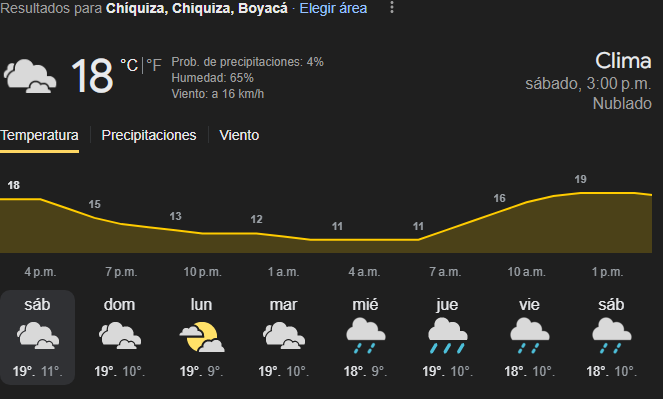

Chíquiza (Juan Albarracín)
Ecología de Chíquiza
Chíquiza presenta un relieve quebrado, se ubica en las laderas de las estribaciones de la cordillera Oriental que desciende del Santuario de Flora y Fauna de Iguaque, formando parte del anticlinal de Arcabuco. Por el costado occidental de la localidad se observa un cerro alargado que inicia cerca al municipio de Sáchica, pasa por zona aledaña a Villa de Leyva, por Chíquiza, Sotaquirá y se dirige a la zona norte de Boyacá.
Fauna
La fauna de Chíquiza, como parte de la región andina de Colombia, es bastante diversa y rica. Algunas de las especies que se pueden encontrar incluyen: Aves, Mamíferos, Reptiles y Anfibios etc.
Mariquita Asiática (Harmonia axyridis)
Azulita del Trébol (Hemiargus hanno)
Espeletia pleiochasia
Roble Andino (Quercus humboldtii)
Clima y Aire en Chíquiza
El clima del territorio es de predominio seco y semidesértico al occidente, con escasa vegetación; hacia el sector que limita con Villa de Leyva y Arcabuco se encuentra bosque primario y fauna como venados, conejos, zorros, tinajos y armadillos. En los últimos años, el territorio de Chíquiza limítrofe con Villa de Leyva ha sufrido incendios forestales recurrentes, los últimos en febrero de 2010 y entre fines de 2023 y comienzos de 2024.
